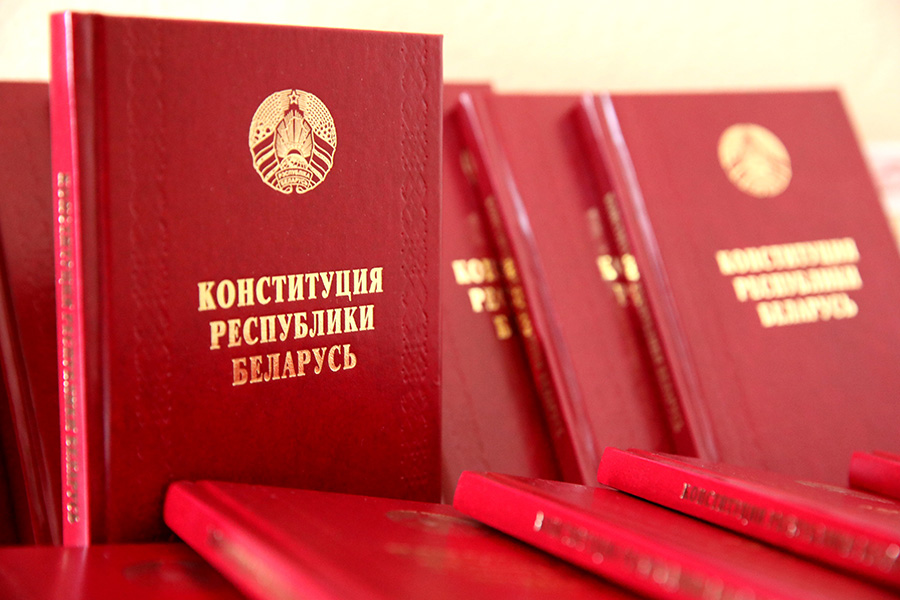
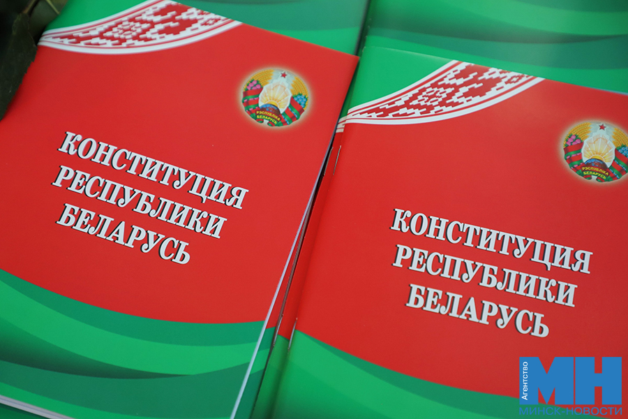
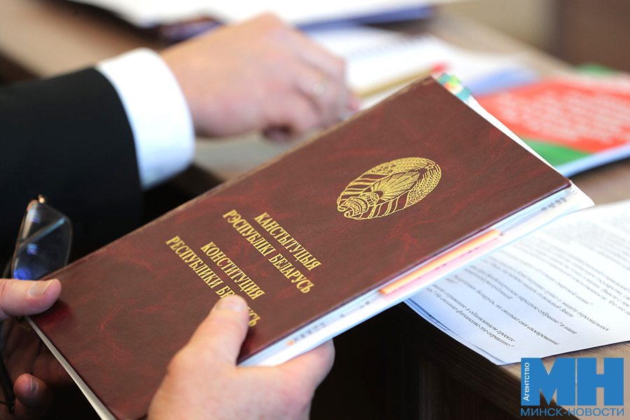

15 марта — День Конституции Республики Беларусь

Наша история
Первая белорусская Конституция принята в Минске 3 февраля 1919 года на Первом Всебелорусском съезде Советов. Кто-то скажет, что Основной Закон на белорусских землях действовал с 1588 года, когда был принят Третий статут Великого княжества Литовского. Или что первая Конституция на белорусских землях появилась еще в XVIII веке. Действительно, 3 мая 1791 года была принята Конституция Речи Посполитой. Она стала первой в Европе и второй в мире, после США. Все верно, но это предшественники настоящего Основного Закона Беларуси. Ведь до установления советской власти и провозглашения ССРБ в 1919 году попросту не существовало суверенного белорусского государства. Как не существовало и исконно белорусской Конституции.
Конституция 1919 года была революционной. В ней были прописаны новые ценности, ломавшие многовековые устои: установление власти Советов рабочих, крестьянских и солдатских депутатов, уничтожение сословий, отмена частной собственности на землю, леса, недра и воды. Конституция гарантировала людям свободу совести и собраний, слова и печати, религиозной и антирелигиозной пропаганды, равноправие национальностей, отделяла церковь от государства и школу от церкви, гарантировала доступ к бесплатному образованию. Вместе с тем в ней был прописан лозунг «не трудящийся да не ест»! Она отвечала вызовам своего времени, но не будущего.
В прошлом веке Конституцию БССР принимали заново в 1927, 1937 и 1978 годах. Каждый раз убирая из нее уже ставшими неактуальными статьи и внося новые пункты, обозначающие вектор развития всего Советского Союза и союзной республики на ближайшие десятилетия. Например, в 1927 году в последней, 76-й, статье Конституции было сказано, что Минск является столицей БССР. А в 1937 году в Основном Законе был задекларирован принцип социализма: «от каждого по его способностям, каждому — по его труду». Конституция гарантировала гражданам права на труд и на материальное обеспечение в старости, в случае болезни и потери трудоспособности. Плюс ежегодные отпуска рабочим и служащим с сохранением заработной платы. Были прописаны права на частную и личную собственность: небольшой приусадебный участок земли и подсобное хозяйство на нем, жилой дом, продуктивный скот, птицу и мелкий сельскохозяйственный инвентарь. Сегодня без этих прав и свобод нельзя представить современную жизнь, а тогда, почти 90 лет назад, это было сродни революции!
Наш Закон

Эволюционный путь прошла и современная Конституция Республики Беларусь. Ее приняли 15 марта 1994 года, и она предопределила вектор развития страны на десятилетия. Согласно Конституции, вводился институт президентства, и во втором туре первых выборов Президента Республики Беларусь победил Александр Лукашенко.
Жизнь сразу показала, что Основной Закон несовершенен и не отвечает интересам большинства белорусов. Например, что противостояние Президента и парламента отрицательно сказывается на жизни всей страны и необходимо решить, как строить свое будущее. Александр Лукашенко предложил провести референдум по внесению изменений и дополнений в Конституцию. 24 ноября 1996 года белорусы пришли на участки для голосования и сделали свой выбор. Они поддержали проект Основного Закона, предложенный Президентом и превращающий РБ в президентскую республику. Отвергли проект от Верховного Совета, упраздняющий пост Президента и превращающий страну в парламентскую республику. Так белорусы поставили точку в споре о форме правления в Республике Беларусь, сделали выбор в пользу сильной вертикали власти.
Наш праздник

Ежегодно 15 марта отмечается государственный праздник — День Конституции, установленный Указом Президента Республики Беларусь от 26 марта 1998 года в честь принятия Основного Закона в 1994 году. Впервые белорусы отметили его в 1999 году, а в 2026 году отметят в 27-й раз.
Символично, что в День Конституции 15 марта 2022 года официально вступили в силу изменения и дополнения в Основной Закон, принятые на республиканском референдуме 27 февраля 2022 года.
Это был очередной этап эволюции белорусской Конституции. Необходимость внесения дополнений и изменений стала очевидна задолго до 2020 года. Конституция действовала более 20 лет, во многом не отвечала вызовам современности. Еще до выборов Президент Беларуси Александр Лукашенко говорил, что настала пора эволюционировать. Однако конституционная реформа все откладывалась по множеству различных причин. Пока не стало ясно, что она жизненно необходима. Выступая с ежегодным Посланием к белорусскому народу и Национальному собранию в январе 2022 года, Президент сказал, что «весь 2021 год тщательно и скрупулезно готовили проект новой Конституции, в полной мере отвечающей запросам общества».
Проект изменений и дополнений Конституции прошел всенародное обсуждение на многочисленных диалоговых площадках, в трудовых коллективах и семьях. Вместе белорусы решали, каким должен быть современный Основной Закон. Высказались за необходимость прописать в Конституции, что брак — это союз мужчины и женщины, и никак иначе. Что государство и народ обязаны сохранить правду и память о героическом подвиге белорусского народа в годы Великой Отечественной войны, что настала пора государству гарантировать всем право на защиту персональных данных и многое другое. На республиканском референдуме белорусы проголосовали за принятие обновленной Конституции.
Таким образом 15 марта стало еще более значимым для каждого. Именно этот день связал воедино принятие первой Конституции Республики Беларусь в 1994 году и ее обновленного варианта в 2022-м. А еще в 2021 году в ежегодный государственный праздник День Конституции Республики Беларусь Указом Президента РБ Александра Лукашенко создана Конституционная комиссия, которая разработала предложения по изменению Конституции Республики Беларусь и обеспечила их всенародное обсуждение.